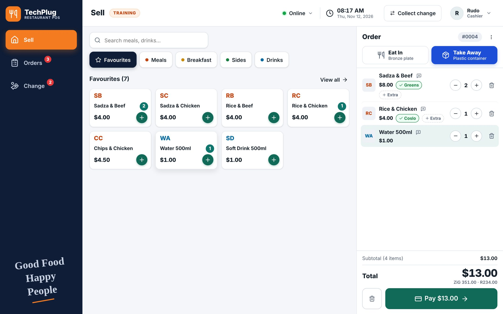
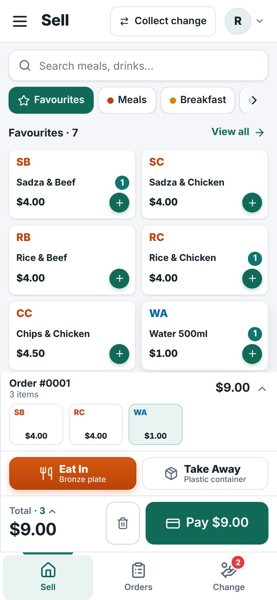
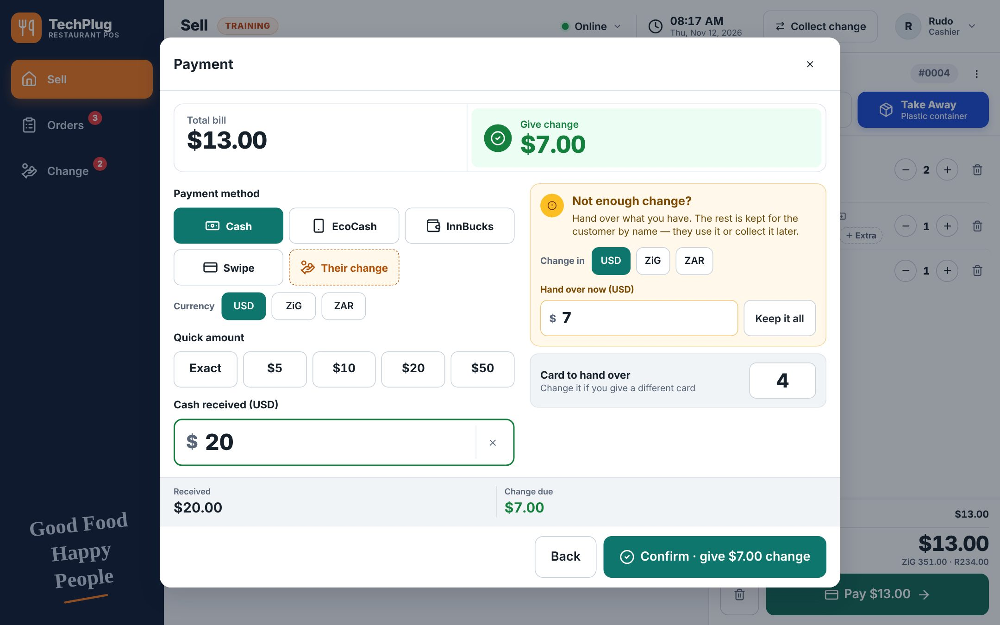
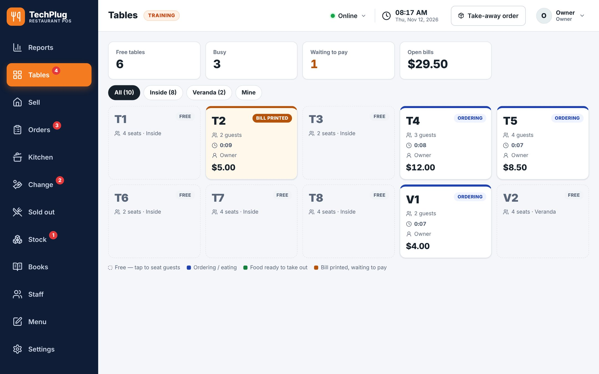
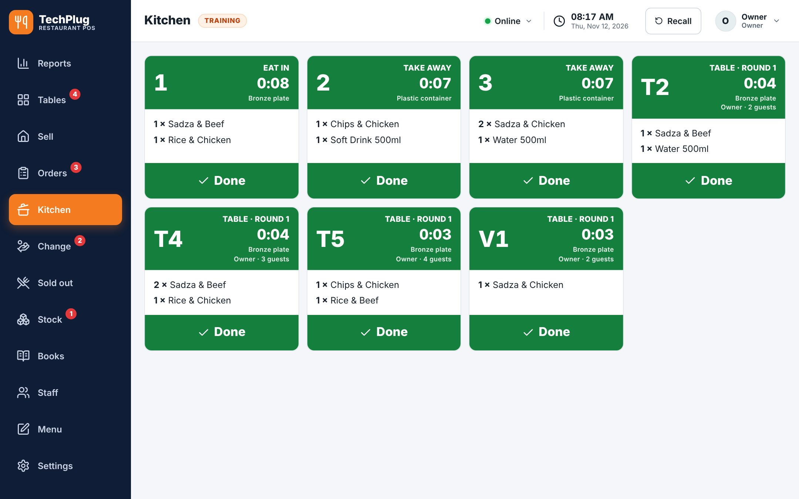
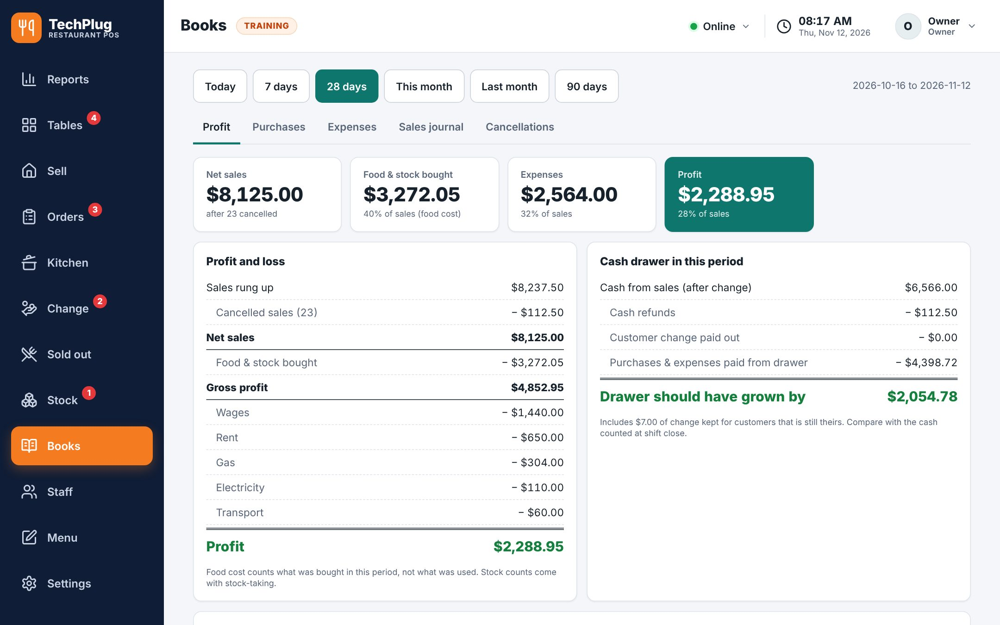
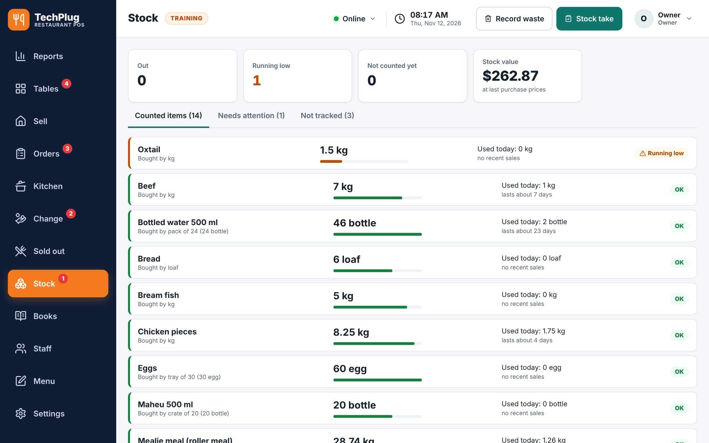

Sell, send orders to the kitchen, take USD, ZiG and EcoCash, track stock and see your real profit every day — even when the internet is down.


Built with a real working restaurant — every screen designed for busy lunchtimes.
Big buttons, favourites, add-ons like extra meat, “no greens” in one tap.
Orders appear instantly with timers. Late orders turn red.
Send rounds, print the bill, split equally, by item or by amount.
Delivery areas and fees, rider slips and tracking.
Paid in USD, change in ZiG or rand. Change owed is remembered.
Sell a plate and the beef goes down. Know what's left.
Sales, food bought, expenses and profit — per day, per meal.
Cashier, waiter, kitchen, manager — each sees only their screens.
Order → payment and change → kitchen → tables and split bills → profit. Recorded on the real app.
Customer pays $20 for a $13 meal? The till says what to give back, in USD, ZiG or rand.

Switch on table service if you need it. Free, eating, food ready, waiting to pay — with guests, minutes and the waiter.

Big tickets with timers. Table and round, take-away or delivery, “NO GREENS” and extras in capitals.

Sales minus food bought minus wages, rent and electricity. And how much should be in the cash drawer.

Every meal knows what it uses — sell a Sadza & Beef and 0.2 kg of beef comes off.

Install on your Windows till, or open it on any phone or tablet — no download needed there.
Name, currencies, menu and staff PINs. A ready-made menu to start from.
The till keeps working without internet. Your data stays on your computer.
Yes. Everything is saved on the device, so you keep selling, printing and running the kitchen screen during outages. You need the internet only the first time you open it.
A Windows 10 or 11 computer for the till (or any phone or tablet), and optionally a receipt printer. The kitchen screen can be a cheap tablet or an old laptop.
Windows shows this for new apps until they are signed with a certificate. Click More info → Run anyway. The app is published openly on GitHub.
By itself. Whenever the till is online it loads the newest version; nothing to reinstall.
Yes — meals, add-ons, prices, categories, exchange rates, payment methods, receipt wording and your logo are all yours to change.
Your sales and books stay on your devices. When cloud backup arrives, each restaurant's data is kept completely separate and only your staff can see it.
Free for 30 days. Set up in minutes.